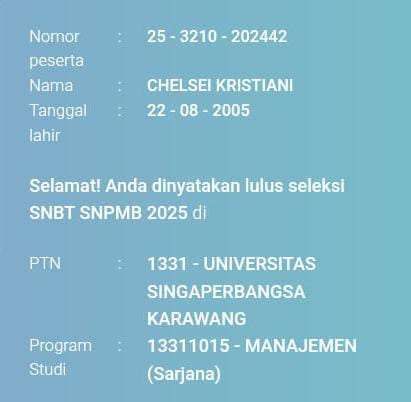
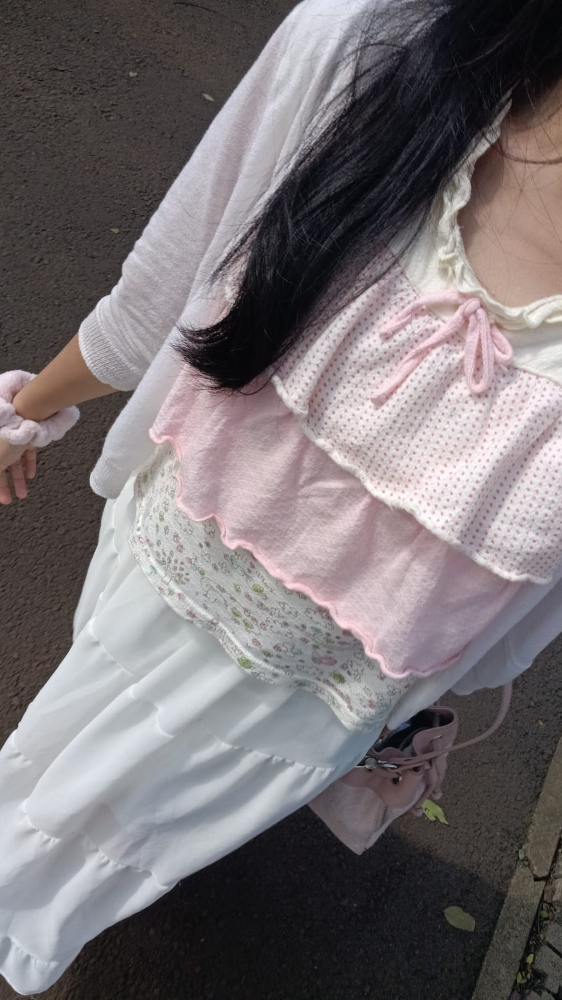

you did it! yey!

Chell's pict before univ-life
First of all
Congrats yaa karna udah keterima di unsika! you did it so well and i'm proud of you!
Mendengar kamu akhirnya keterima di unsika cukup bikin aku senyum lebar di parkiran motor sore hari itu. Tapi kalau boleh jujur, aku nggak sepenuhnya kaget, karna aku tau kemampuan kamu dan harapan kamu yang besar pasti bisa tembusin si snbt snbt itu xD. Bukan karena ini hal yang mudah, sama sekali bukan, tapi karena
aku selalu melihat caramu berusaha dan semangatmu yang nggak setengah-setengah itu(walaupun suka ketiduran pas lagi belajar). Aku ikut merasa seneng, bangga, terharu, dan banyak lagi pokonya.
enjoy your new journey--and enjoy your univ-life yaa!
hope your univ-life will be as fun as you expected, and hope you can find your passion, your new friends there. Dan, jangan lupa untuk selalu menebarkan conquette vibesmu itu yaa :3
Kamu udah berjuang keras buat sampai di titik ini, dan sekarang saatnya kamu menikmati hasil dari kerja kerasmu. Jangan lupa untuk tetap rendah hati dan terus belajar, karena perjalananmu masih panjang.
Last of all
disaat kamu lagi cape atau bahkan mau menyerah karna banyak tugas atau kehidupan kampus yang lagi ga sesuai dengan mood dan keinginan kamu, i hope you always remember this moment,
dan semoga kamu selalu ingat kalau kamu pasti bisa melewati problem itu. Jangan lupa juga untuk selalu jaga kesehatan, ibadah, dan bersyukur yaa,
karena itu adalah koenci. Semoga sukses di perkuliahan nanti, jangan lupa ajak aku jalan-jalan yaa!
hope you like this little surprise^^
Best regard
your #2 support system, Jreall.